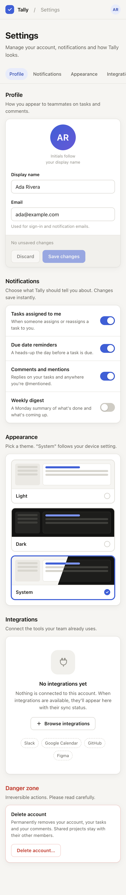
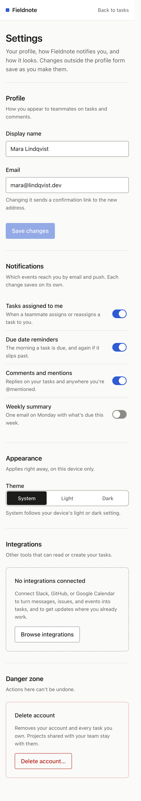
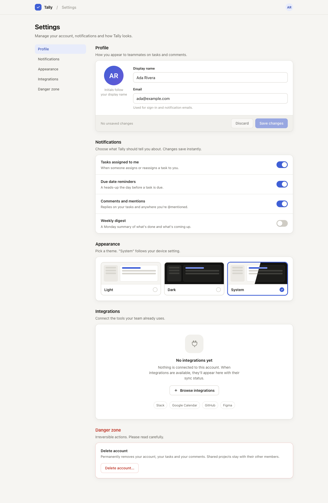
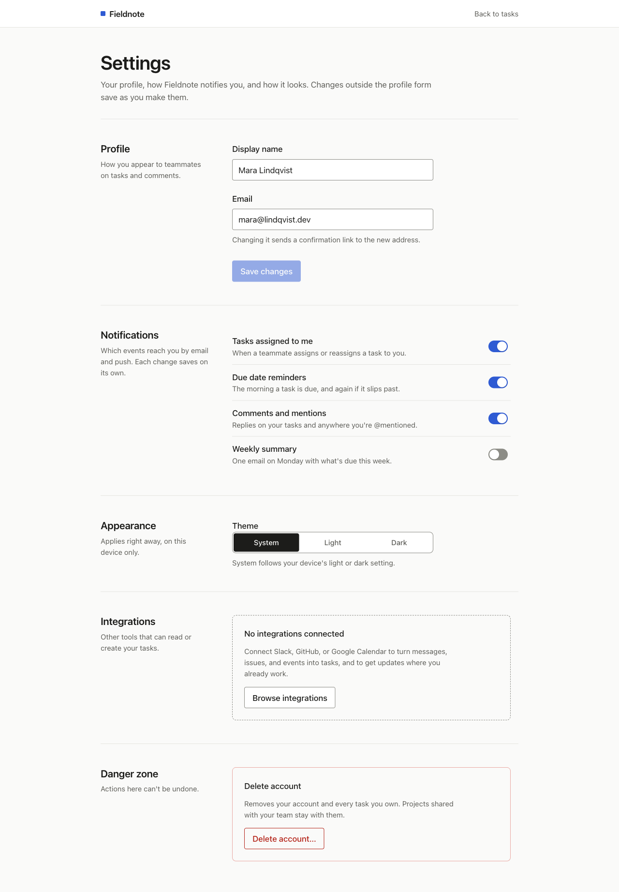

Two agents built a settings page from the prompt below. Neither saw the other's work. Nothing was edited afterwards. Scroll inside each phone frame.
Build a settings page for a task-management web app as one self-contained HTML file. Profile section (display name, email, save), four notification toggles, appearance section (theme choice), an integrations section that is currently empty, and a danger zone with account deletion. It must work on phones and desktops. Make it look good.




Both pages have labelled inputs, real switches with ARIA state, focus rings, a confirmed delete step, a dark theme, and a reduced-motion rule. The base model already knows this. The skill changed what was forbidden and what was forced.
| Without skill | With skill | |
|---|---|---|
| Grouping | Every section is a white card with border and shadow | Hairline dividers; a box only where it carries meaning (empty state, danger zone) |
| Extra elements | Avatar with initials, sticky section nav, three theme preview tiles, planned-integration chips | None of these. One segmented control for theme |
| Spacing and type | Its own values, consistent within the page | The starter token scale verbatim: 4px base, fluid type, two radii |
| Motion | Transitions on most controls | Named properties only, 120–200ms, nothing on load |
| Verification | Agent did not render the page | Agent rendered at 375px and 1280px, light and dark, error state, dialog, and said so |
| Agent's report | 10 decisions, no sources | 10 decisions, each tied to a checklist item or a Checked designer |
Which is better is partly taste. The skill's version is quieter and every choice is traceable. The other has more product polish and more to maintain. The skill did not make the page correct. It made it restrained, on one scale, and verified.
The with-skill page scrolls 18px sideways on a 375px phone. Its three visually-hidden theme radios use with no offset and no positioned ancestor, so they land at x=393 and widen the document. The body stays 375px wide, which is why the agent's own overflow check passed. That is checklist item M1 failing on the page meant to pass it.
The page is kept as generated. The checklist was changed instead: M1 now says to measure the document width, not the body. The no-skill page does not have this problem.